Fahrtenliste
Monatlich gruppierte Fahrten mit Gesamtstrecke und gespeicherter Erstattung der Auswahl.
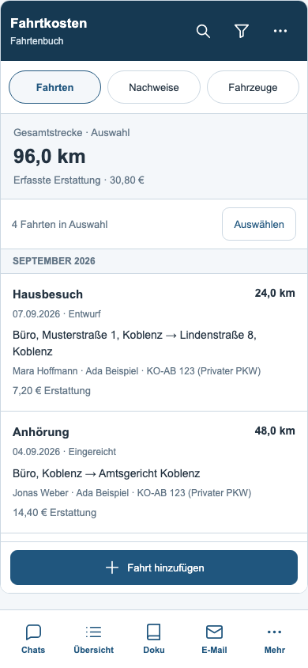
Fahrten filtern
Jahr, Monat, Fahrzeug, Fall, Status, berechtigter Fahrerfilter und Sortierung.
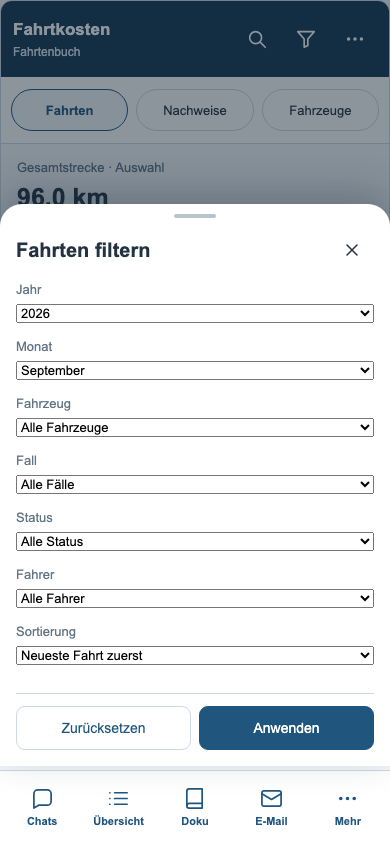
Fahrtdetails
Anlass, Fall, Fahrer, Fahrzeug, vollständige Adressen, Kilometer und Bestätigungen.
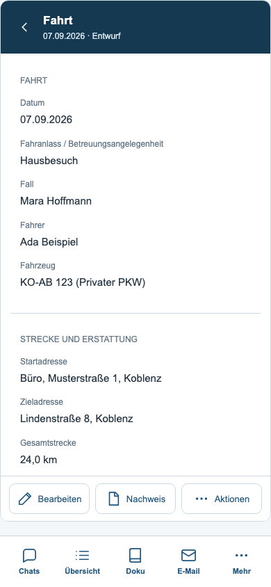
Fahrt bearbeiten
Alle vorhandenen Eingabefelder in einem geschützten Formular.
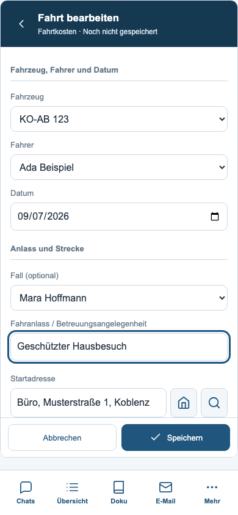
Strecke bearbeiten
Büroadresse, Adresssuche, Entfernungsberechnung, Kalenderübernahme und Start-Ziel-Tausch.
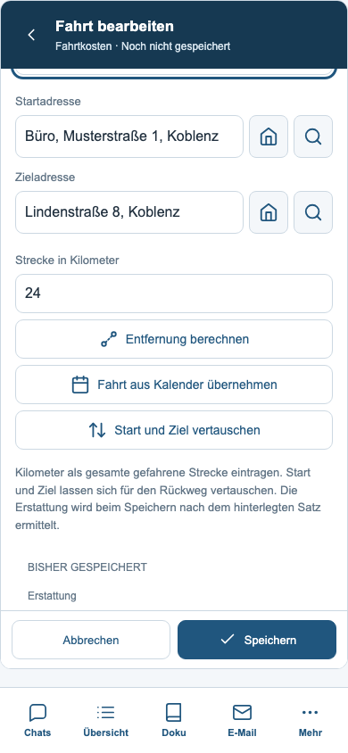
Termin auswählen
Durchsuchbare Termine aus dem bestehenden Zeitraum, auch über vierzig Einträge hinaus.
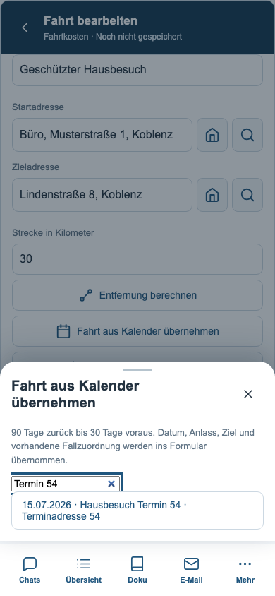
Fahrtaktionen
Duplizieren, Status ändern, Löschen und Nachweis erstellen.
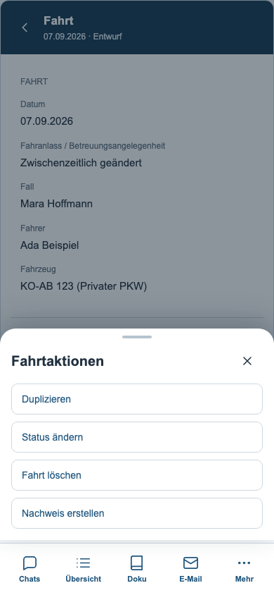
Mehrere Fahrten auswählen
Sammelaktionen für die ausgewählten aktuellen Treffer.
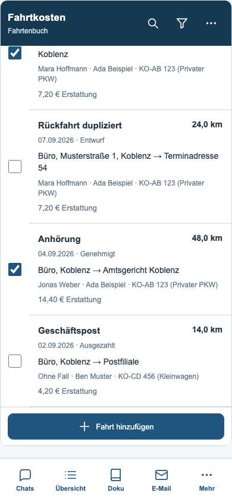
Fahrt einreichen
Bestehende Namensbestätigung für Mitarbeitende; ein fehlender Name wird erklärt.
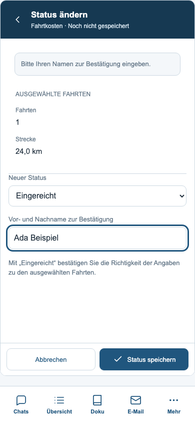
Prüfen und freigeben
Berechtigte Prüfer erhalten die bestehenden Bearbeitungsstände.
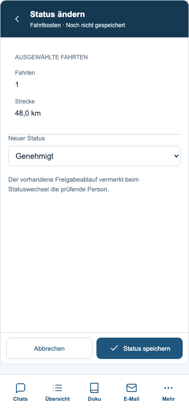
Nachweis nach Fahrzeug
Jahresauswertung mit PDF, Excel und ODS über die vorhandenen Generatoren.
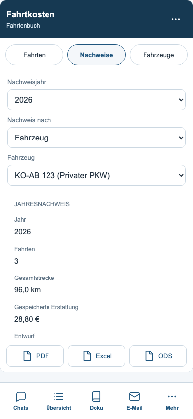
Nachweis nach Fahrer
Excel und ODS über alle Fahrzeuge einer Person im ausgewählten Jahr.
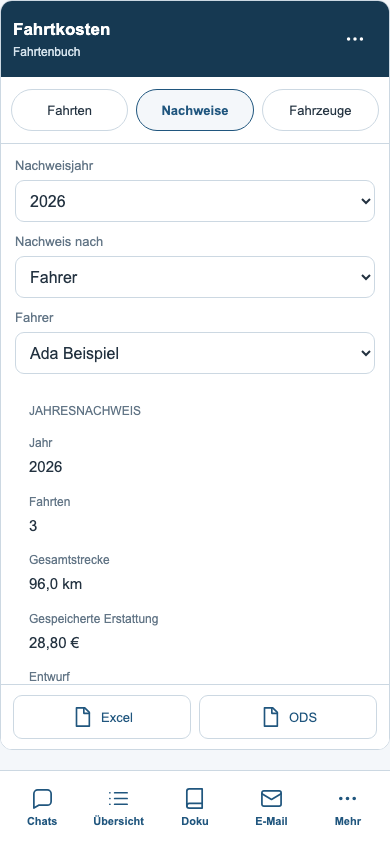
Fahrzeuge
Kennzeichen, Modell, Status und Anmerkung mit Suche und Filter.
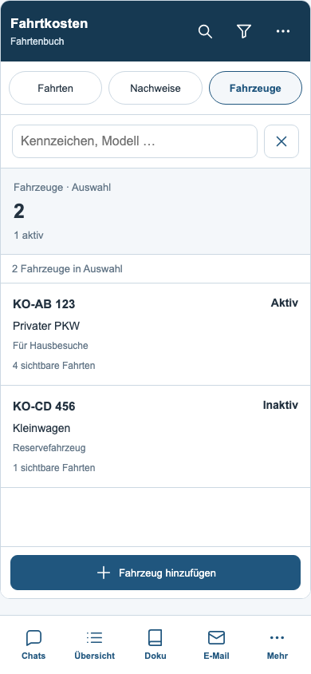
Fahrzeugdetails
Vorhandene Angaben, Bearbeitung und direkter Sprung zu den Fahrten des Fahrzeugs.
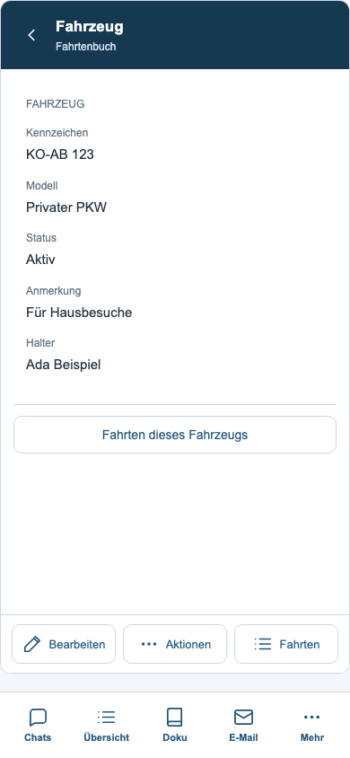
Fahrzeug bearbeiten
Kennzeichen, Modell, Status und Anmerkung mit fest erreichbaren Aktionen.
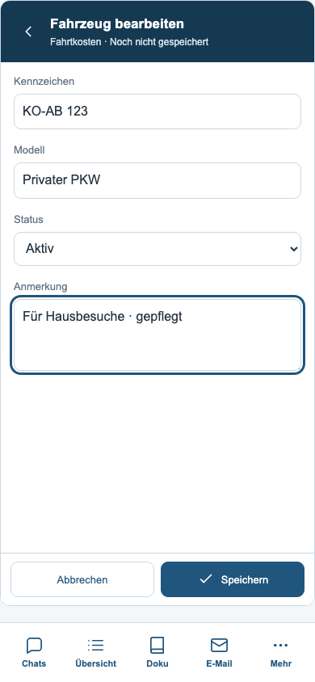
Speicherfehler
Der Entwurf bleibt nach einem fehlgeschlagenen Schreibzugriff erhalten.
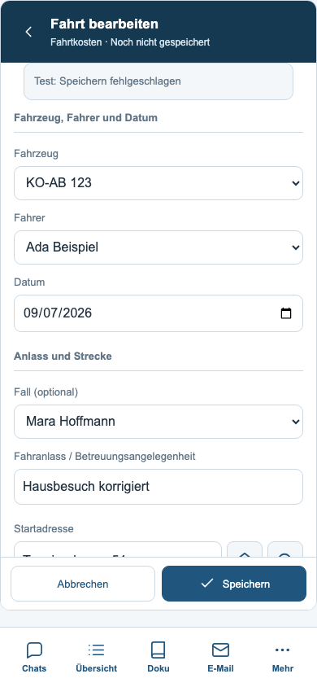
Geöffnete Tastatur
Simulation: Navigation ausgeblendet, Formularaktionen im sichtbaren Bereich.
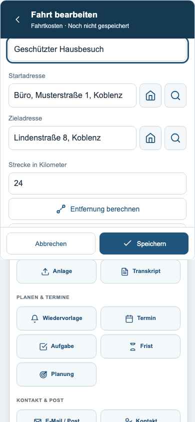
Dunkles Design
Gemeinsame Farben und lesbare Fahrtenlisten auch auf schmalen Displays.
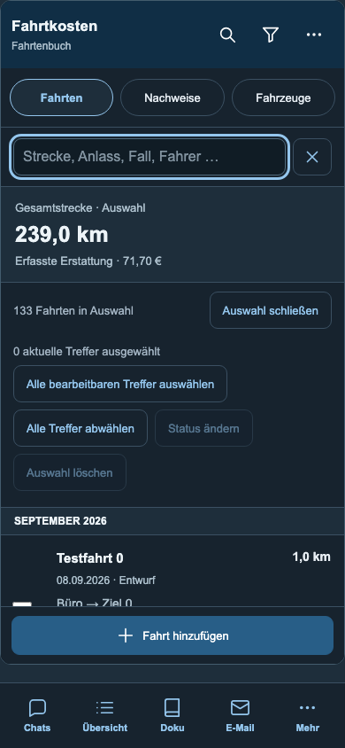